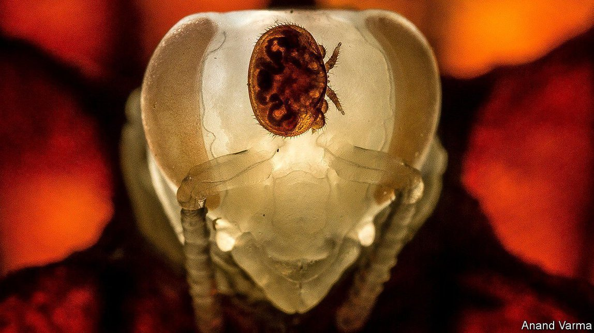

2021-05-31T14:02:51+00:00
控制农业虫害
用于疫苗的RNA也可用作杀虫剂
除虫有新招
核糖核酸（RNA）过去在生物圈之外鲜为人知，近来却成了“这个时代的分子”。这是因为它在新冠疫苗中扮演的角色。新冠疫苗中的RNA分子会编码一种冠状病毒刺突蛋白，因此当人体细胞的蛋白合成机制遇到这样的RNA，就会制造刺突。这让疫苗受种者的免疫系统在真正的敌人出现之前，学会识别它的关键特征。
然而，帮助合成蛋白质并不是RNA唯一的工作。它的许多其他工作之一是在一个叫作RNA干扰的过程中起到的核心作用。RNA干扰是阻止、而不是帮助特定蛋白质的生成。这一过程简称为RNAi。人们也对它进行了医学上的研究。它已经被批准用来治疗四种遗传病，还有其他十多种疾病的治疗也在研究中。这是件好事。不过，一些生物学家认为，RNAi可能还有一个重要的非医学用途，即用作一种精准靶向、对环境无害的杀虫剂。
它的原理很简单。找到对相关害虫的存活至关重要的一种蛋白质。制作专门的RNA干扰分子来破坏这种蛋白质的生成。把它送入害虫体内。然后等待害虫通通死掉。当然，实际操作起来会更复杂。必须设计好药物输送机制，还要通过重重监管。但直到最近，最大的障碍还是成本。救命药可以昂贵，而杀虫剂必须便宜。但RNA的医学研究带来的好处之一是降低了这种物质的生产成本。堪萨斯州的RNAissance Ag公司正在研发基于RNA的杀虫剂，其老板迈克尔·海姆斯泰特（Michael Helmstetter）说：“公司刚启动时RNA的价格是10万美元一克。到2014年是100美元一克。现在是一美元一克。”
积极干扰
蜜蜂可能是最大的受益者。这些半驯养的昆虫之所以重要，不仅是因为它们生产蜂蜜，还因为它们传播花粉。但它们常常受到狄斯瓦螨（以下简称瓦螨）的侵扰。瓦螨是一种只有几毫米大的螨虫（如上图所示，贴附在一只正在化蛹的蜜蜂头上）。瓦螨靠附着在蜜蜂身上并吸食蜜蜂体液为生。这会让蜜蜂衰弱或者死亡，并且在蜂房周围传播病毒。一些人怀疑瓦螨与蜂群崩溃综合症有关，这是一种导致大部分工蜂原因不明地弃巢而去的神秘现象。
养蜂人尝试了各种办法来对付瓦螨。一些人在蜂房入口处放置加有双甲脒的塑料条，双甲脒是公认的高效杀螨剂。一些人把同样被认为有很好杀螨效果的草酸汽化后注入蜂房。另一些人仍在开展育种项目，选育抗螨蜂种。但他们都没能成功解决瓦螨问题。这些方法充其量也只是把瓦螨的数量刚刚控制在危机爆发的临界值以下。
波士顿一家名为GreenLight Biosciences的公司想出份力。它从德国制药和生命科学公司拜耳那里买下了一种基于RNAi的试验性瓦螨杀虫剂的所有权。GreenLight的老板安德烈·扎鲁（Andrey Zarur）希望它会在其他方法都挫败之时取得成功，因为它对付瓦螨的方法是单凭化学干预无法做到的。
当待产卵的雌螨和在蜂房的巢室里成长的蜜蜂幼虫一起爬行时，瓦螨的生命周期便开始了。在蜜蜂幼虫生长的过程中，雌螨只是静待在那里。但一旦蜜蜂幼虫变成蛹，雌螨就开始行动起来，在蜂蛹上产卵。在接下来的几天里，瓦螨会和蜜蜂一起发育成熟，当蜜蜂成虫从巢室里出来时，附着在它身上的瓦螨就会在蜂房周围四散开来，以后一代接一代地重复这种伎俩。
瓦螨在巢房里蛰伏的时间很长，这让它们很难对付。这也是GreenLight希望自己的RNA能取得突破的地方。在乔治亚州的田野试验中，GreenLight的技术人员把能杀灭瓦螨的RNA掺在工蜂食用以及酿造蜂蜜用的糖水中喂给蜜蜂。如此这般在瓦螨出生地的所有蜂蜜中加入这种RNA，就为瓦螨设下了一个生物技术陷阱。扎鲁认为，如果能降低RNA的生产成本，并由此大幅提高RNA的用量，他就能更多地给瓦螨投喂RNA，从而做成拜耳和其他公司没有做成的事。
不过，瓦螨并不是GreenLight瞄上的唯一害虫。它还盯上了科罗拉多马铃薯甲虫，这种甲虫如果不加以控制，会对庄稼造成毁灭性破坏。他们的做法是直接把RNA喷洒到受甲虫入侵的田地里，让甲虫吃掉。尽管对细节讳莫如深，但GreenLight表示，它还在对其他13种有害生物开展研究，其中包括草地贪夜蛾的幼虫，它从烟草到柑橘无所不吃；还有小菜蛾的毛虫，这是世界上对包括卷心菜、花椰菜、西兰花、抱子甘蓝和油菜在内的芥属植物危害最大的害虫。另外，RNAi方法也不是只能用来对付动物。原则上，所有生物体都容易受到它的影响。因此，GreenLight的目标清单里还包括葡萄孢菌、镰刀菌和白粉菌等对作物有害的真菌。
细胞游戏
毫不出奇，GreenLight在研发RNA杀虫剂的过程中遇到了竞争对手。至少还有两家美国公司也在致力于研发这种杀虫剂。海姆斯泰特的公司RNAissance Ag正在竭力对付马铃薯甲虫和草地贪夜蛾。位于弗吉尼亚州的夏洛茨维尔市（Charlottesville）的AgroSpheres正在想办法消灭小菜蛾。这三家企业都认为自己能生产足够便宜的RNA，用于田间喷洒灭虫。但它们的方法有所不同。
GreenLight采用的方法叫作无细胞生物学，它更类似于化学而不是传统的生物技术。扎鲁说，无需悉心培养娇贵的微生物这一点极大地简化了过程并降低了成本。而RNAissance和AgroSpheres采用了更传统的方法——在经基因改造的细菌中培育RNA分子。这也自有优势。这种方法将RNA包裹进菌细胞，可以起到保护RNA分子的作用。它还可以让这两家公司的生物技术专家在细胞壁上做文章，比如增加粘性，防止它们从植物叶片上滑落。
然而，在作物上喷洒RNA并不是让它进入害虫体内的唯一方法。虽然拜耳已经放弃了蜜蜂技术，但它正在研发一种转基因玉米，这种玉米产生的RNA可以杀死一种叫作玉米根虫的甲虫幼虫。佛罗里达大学的一个研究团队正在尝试采用类似的方法对付一种叫作木虱的昆虫。木虱传播的细菌会引发柑橘黄龙病，对柑橘园是严重的威胁。
不过，RNA喷洒有其优势。农民可以在现有作物上喷洒RNA，而不必改种转基因作物。且与创造转基因生物相比，相关法规也没那么繁琐。欧洲很多地方都禁止转基因作物，各国政府似乎对基于RNA的杀虫剂持开放态度。
德国弗劳恩霍夫应用研究促进协会（Fraunhofer Institute）吉森（Giessen）园区的昆虫学家安德里亚斯·维尔钦斯卡斯（Andreas Vilcinskas）正在与GreenLight合作，他说他们的研究现在得到了德国政府的支持。德国政府有充分的理由这么做。2018年，欧盟禁止在户外使用当时被广泛应用的三种新烟碱类杀虫剂。从那以后，蚜虫如野火般迅速蔓延，德国、法国和波兰不得不又紧急撤销了这道禁令。讽刺的是，禁止新烟碱类杀虫剂的初衷是为了保护蜜蜂。因此，将RNA作为杀虫剂来推广，可说是一箭双雕。
2021-05-31T14:02:51+00:00
Controlling agricultural pests
RNA, good for vaccines, can also be used as a pesticide
A new approach to debugging
RIBONUCLEIC ACID (RNA), once little-known outside biological circles, has recently become the molecule de nos jours. The reason is its role in covid-19 vaccines. The RNA molecules in these encode spike, a coronavirus protein. So, when the protein-making machinery of a body cell encounters such RNA, spike is what it makes. That lets a vaccine-recipient’s immune system learn to recognise a crucial part of the enemy before the real thing turns up.
Helping to make proteins is not, however, RNA’s only job. Among many other things it is central to a process called RNA interference, which prevents, rather than facilitates, the manufacture of specific proteins. RNAi, as this activity is called for short, has also been investigated medically. It has been approved for use against four genetic diseases and is under investigation for the treatment of more than a dozen others. That is good. Some biologists, though, think RNAi may have an important non-medical use as well, as a precisely targeted, environmentally friendly pesticide.
The theory is simple. Identify a protein crucial to the survival of the pest in question. Tailor a specific interfering RNA molecule to sabotage production of that protein. Deliver it into the bodies of the pests. Then wait for them all to die. In practice, of course, things are more complicated. Delivery mechanisms have to be designed and regulatory hoops jumped through. But until recently, the biggest obstacle was cost. Life-saving medicines can be expensive. Pesticides must be cheap. One effect of all the medical RNA work, however, has been to bring down the cost of making the stuff. As Michael Helmstetter, the boss of RNAissance Ag, a firm in Kansas which is developing RNA-based pesticides, observes, “a gram of RNA cost $100,000 when we started. By 2014 it was $100 a gram. Now it’s a dollar a gram.”
Running interference
Top of the list of potential beneficiaries are honeybees. These semi-domesticated insects, important not only for their eponymous product, but also as pollinators, are plagued by Varroa destructor, a mite a couple of millimetres across (pictured above, on the head of a pupating bee). Varroa mites live by attaching themselves to, and feeding on, bees. This weakens or kills the hosts and also spreads viruses around a hive. Some suspect Varroa plays a role in colony-collapse disorder, a mysterious phenomenon in which most of a hive’s workers desert for no apparent reason.
Beekeepers have tried all sorts of ways of attacking Varroa mites. Some place plastic strips laced with amitraz, a pesticide reckoned particularly effective against mites, at the entrances to hives. Others vaporise oxalic acid, which has a similar reputation, and pump it into the hive. Others still run breeding programmes, selecting for bees that resist infestation. None has succeeded in solving the Varroa problem. At best, these approaches keep the mites’ numbers just below the threshold of crisis.
GreenLight Biosciences, a company in Boston, wants to help. It has bought from Bayer, a German pharmaceutical and life-science firm, the rights to an experimental Varroa pesticide based on RNAi. Andrey Zarur, GreenLight’s boss, hopes this will succeed where other methods fail because it attacks the mite in a way mere chemical interventions cannot.
Varroa’s lifecycle starts when a pregnant female mite crawls alongside a bee larva developing inside one of the nursery cells in a hive’s honeycomb. While the larva is growing, this mite just sits there. But once it turns into a pupa she springs into action and lays her eggs on it. Mites and bee then mature in unison over the next few days, and when the adult bee emerges from the cell, the mites attached to it spread around the hive to repeat their trick with future generations.
That the mites spend so much time hidden in the honeycomb makes them hard to attack. And this is where GreenLight hopes its RNA will win through. In field trials in the state of Georgia the firm’s operatives are feeding Varroa-destroying RNA to the bees themselves—mixing it in sugar water which the workers drink and make honey from. This lays a biotechnological trap for the mites by lacing any honey in their birthplace with the stuff. By lowering the cost of RNA production and so allowing much more of it to be used, Mr Zarur thinks he can deliver more RNA to the mites, succeeding where Bayer and others did not.
Varroa mites are not, though, the only pests in GreenLight’s crosshairs. It also has its sights trained on Colorado potato beetles, which can devastate crops if not controlled. In their case the RNA is simply sprayed onto an infested field and the beetles munch it up. And, though it is cagey about the details, the firm says it has 13 other hostile organisms under investigation, too. These include the fall armyworm, a moth caterpillar that chomps through everything from tobacco to oranges, and the caterpillars of the diamondback moth, the world’s worst pest of brassicas, a group which includes cabbages, cauliflowers, broccoli, Brussels sprouts and oilseed rape. Nor is the RNAi approach limited to attacking animals. In principle, any organism is susceptible to it. GreenLight’s target list therefore also includes crop-damaging fungi such as Botrytis, Fusarium and powdery mildew.
Cell game
Not surprisingly, GreenLight has rivals in its quest to develop RNA pesticides. At least two other American companies are working on them as well. RNAissance Ag, Dr Helmstetter’s firm, is gunning for the potato beetle and the fall armyworm. AgroSpheres, in Charlottesville, Virginia, is going after Diamondback moths. All three enterprises think they can make RNA cheaply enough for it to be sprayed onto fields. But they do so in different ways.
GreenLight employs a process called cell-free biology, which is more akin to chemistry than conventional biotechnology. Eliminating the need to coddle fussy micro-organisms, says Mr Zarur, simplifies and cheapens things dramatically. But the more traditional approach taken by RNAissance and AgroSpheres, of growing their RNA molecules inside modified bacteria, offers advantages, too. Packaging the RNA in bacterial cells in this way protects the molecules. It also allows the companies’ biotechnologists to add features to the cell walls, such as stickiness that stops them slipping off the leaves of plants.
Spraying RNA onto crops is not, however, the only way to get it into pests. Though it has abandoned its honeybee technology, Bayer is developing a genetically modified maize which produces RNA that kills beetle larvae called corn rootworms. A group at the University of Florida is taking a similar approach to the insects known as psyllids that spread a bacterium which causes citrus-greening disease, a serious threat to orange groves.
RNA spraying has advantages, though. A farmer can use it on existing crops, rather than having to replant with transgenic versions. The regulations are less onerous than for the creation of transgenic organisms. And in Europe, where transgenic crops are banned in many places, governments seem open to RNA-based pesticides.
Andreas Vilcinskas, an entomologist at the Fraunhofer Institute’s campus in Giessen, Germany, who is working with GreenLight, says the German government now supports their development. It has good reason to. In 2018 the European Union banned the outdoor use of three types of neonicotinoids, a popular class of pesticides. Since then, Germany, France and Poland have all had to reverse this ban on an emergency basis after aphids spread like wildfire. Ironically, neonicotinoids were banned to help bees. Promoting RNA as a pesticide might thus, as it were, kill many bugs with one stone. ■
2021-05-31T14:02:51+00:00
控制農業蟲害
用於疫苗的RNA也可用作殺蟲劑
除蟲有新招
核糖核酸（RNA）過去在生物圈之外鮮為人知，近來卻成了“這個時代的分子”。這是因為它在新冠疫苗中扮演的角色。新冠疫苗中的RNA分子會編碼一種冠狀病毒刺突蛋白，因此當人體細胞的蛋白合成機制遇到這樣的RNA，就會製造刺突。這讓疫苗受種者的免疫系統在真正的敵人出現之前，學會識別它的關鍵特徵。
然而，幫助合成蛋白質並不是RNA唯一的工作。它的許多其他工作之一是在一個叫作RNA干擾的過程中起到的核心作用。RNA干擾是阻止、而不是幫助特定蛋白質的生成。這一過程簡稱為RNAi。人們也對它進行了醫學上的研究。它已經被批准用來治療四種遺傳病，還有其他十多種疾病的治療也在研究中。這是件好事。不過，一些生物學家認為，RNAi可能還有一個重要的非醫學用途，即用作一種精準靶向、對環境無害的殺蟲劑。
它的原理很簡單。找到對相關害蟲的存活至關重要的一種蛋白質。製作專門的RNA干擾分子來破壞這種蛋白質的生成。把它送入害蟲體內。然後等待害蟲通通死掉。當然，實際操作起來會更複雜。必須設計好藥物輸送機制，還要通過重重監管。但直到最近，最大的障礙還是成本。救命葯可以昂貴，而殺蟲劑必須便宜。但RNA的醫學研究帶來的好處之一是降低了這種物質的生產成本。堪薩斯州的RNAissance Ag公司正在研發基於RNA的殺蟲劑，其老闆邁克爾·海姆斯泰特（Michael Helmstetter）說：“公司剛啟動時RNA的價格是10萬美元一克。到2014年是100美元一克。現在是一美元一克。”
積極干擾
蜜蜂可能是最大的受益者。這些半馴養的昆蟲之所以重要，不僅是因為它們生產蜂蜜，還因為它們傳播花粉。但它們常常受到狄斯瓦蟎（以下簡稱瓦蟎）的侵擾。瓦蟎是一種只有幾毫米大的蟎蟲（如上圖所示，貼附在一隻正在化蛹的蜜蜂頭上）。瓦蟎靠附着在蜜蜂身上並吸食蜜蜂體液為生。這會讓蜜蜂衰弱或者死亡，並且在蜂房周圍傳播病毒。一些人懷疑瓦蟎與蜂群崩潰綜合症有關，這是一種導致大部分工蜂原因不明地棄巢而去的神秘現象。
養蜂人嘗試了各種辦法來對付瓦蟎。一些人在蜂房入口處放置加有雙甲脒的塑料條，雙甲脒是公認的高效殺蟎劑。一些人把同樣被認為有很好殺蟎效果的草酸汽化後注入蜂房。另一些人仍在開展育種項目，選育抗蟎蜂種。但他們都沒能成功解決瓦蟎問題。這些方法充其量也只是把瓦蟎的數量剛剛控制在危機爆發的臨界值以下。
波士頓一家名為GreenLight Biosciences的公司想出份力。它從德國製藥和生命科學公司拜耳那裡買下了一種基於RNAi的試驗性瓦蟎殺蟲劑的所有權。GreenLight的老闆安德烈·扎魯（Andrey Zarur）希望它會在其他方法都挫敗之時取得成功，因為它對付瓦蟎的方法是單憑化學干預無法做到的。
當待產卵的雌蟎和在蜂房的巢室里成長的蜜蜂幼蟲一起爬行時，瓦蟎的生命周期便開始了。在蜜蜂幼蟲生長的過程中，雌蟎只是靜待在那裡。但一旦蜜蜂幼蟲變成蛹，雌蟎就開始行動起來，在蜂蛹上產卵。在接下來的幾天里，瓦蟎會和蜜蜂一起發育成熟，當蜜蜂成蟲從巢室里出來時，附着在它身上的瓦蟎就會在蜂房周圍四散開來，以後一代接一代地重複這種伎倆。
瓦蟎在巢房裡蟄伏的時間很長，這讓它們很難對付。這也是GreenLight希望自己的RNA能取得突破的地方。在喬治亞州的田野試驗中，GreenLight的技術人員把能殺滅瓦蟎的RNA摻在工蜂食用以及釀造蜂蜜用的糖水中餵給蜜蜂。如此這般在瓦蟎出生地的所有蜂蜜中加入這種RNA，就為瓦蟎設下了一個生物技術陷阱。扎魯認為，如果能降低RNA的生產成本，並由此大幅提高RNA的用量，他就能更多地給瓦蟎投喂RNA，從而做成拜耳和其他公司沒有做成的事。
不過，瓦蟎並不是GreenLight瞄上的唯一害蟲。它還盯上了科羅拉多馬鈴薯甲蟲，這種甲蟲如果不加以控制，會對莊稼造成毀滅性破壞。他們的做法是直接把RNA噴洒到受甲蟲入侵的田地里，讓甲蟲吃掉。儘管對細節諱莫如深，但GreenLight表示，它還在對其他13種有害生物開展研究，其中包括草地貪夜蛾的幼蟲，它從煙草到柑橘無所不吃；還有小菜蛾的毛蟲，這是世界上對包括捲心菜、花椰菜、西蘭花、抱子甘藍和油菜在內的芥屬植物危害最大的害蟲。另外，RNAi方法也不是只能用來對付動物。原則上，所有生物體都容易受到它的影響。因此，GreenLight的目標清單里還包括葡萄孢菌、鐮刀菌和白粉菌等對作物有害的真菌。
細胞遊戲
毫不出奇，GreenLight在研發RNA殺蟲劑的過程中遇到了競爭對手。至少還有兩家美國公司也在致力於研發這種殺蟲劑。海姆斯泰特的公司RNAissance Ag正在竭力對付馬鈴薯甲蟲和草地貪夜蛾。位於弗吉尼亞州的夏洛茨維爾市（Charlottesville）的AgroSpheres正在想辦法消滅小菜蛾。這三家企業都認為自己能生產足夠便宜的RNA，用于田間噴洒滅蟲。但它們的方法有所不同。
GreenLight採用的方法叫作無細胞生物學，它更類似於化學而不是傳統的生物技術。扎魯說，無需悉心培養嬌貴的微生物這一點極大地簡化了過程並降低了成本。而RNAissance和AgroSpheres採用了更傳統的方法——在經基因改造的細菌中培育RNA分子。這也自有優勢。這種方法將RNA包裹進菌細胞，可以起到保護RNA分子的作用。它還可以讓這兩家公司的生物技術專家在細胞壁上做文章，比如增加粘性，防止它們從植物葉片上滑落。
然而，在作物上噴洒RNA並不是讓它進入害蟲體內的唯一方法。雖然拜耳已經放棄了蜜蜂技術，但它正在研發一種轉基因玉米，這種玉米產生的RNA可以殺死一種叫作玉米根蟲的甲蟲幼蟲。佛羅里達大學的一個研究團隊正在嘗試採用類似的方法對付一種叫作木虱的昆蟲。木虱傳播的細菌會引發柑橘黃龍病，對柑橘園是嚴重的威脅。
不過，RNA噴洒有其優勢。農民可以在現有作物上噴洒RNA，而不必改種轉基因作物。且與創造轉基因生物相比，相關法規也沒那麼繁瑣。歐洲很多地方都禁止轉基因作物，各國政府似乎對基於RNA的殺蟲劑持開放態度。
德國弗勞恩霍夫應用研究促進協會（Fraunhofer Institute）吉森（Giessen）園區的昆蟲學家安德里亞斯·維爾欽斯卡斯（Andreas Vilcinskas）正在與GreenLight合作，他說他們的研究現在得到了德國政府的支持。德國政府有充分的理由這麼做。2018年，歐盟禁止在戶外使用當時被廣泛應用的三種新煙鹼類殺蟲劑。從那以後，蚜蟲如野火般迅速蔓延，德國、法國和波蘭不得不又緊急撤銷了這道禁令。諷刺的是，禁止新煙鹼類殺蟲劑的初衷是為了保護蜜蜂。因此，將RNA作為殺蟲劑來推廣，可說是一箭雙鵰。